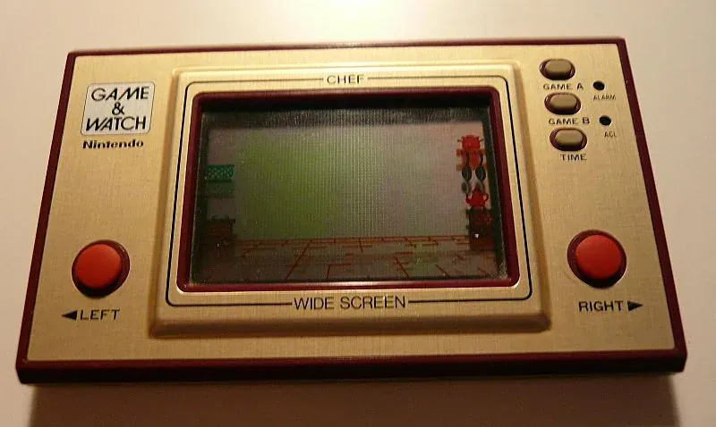

1980 年发布
Game & Watch
便携游戏先驱 · 横井军平设计 · 掌机概念奠基者
4340万
全球销量
LCD
屏幕类型
¥5,800
首发价格(日元)
59款
总型号数
📖 历史与背景
1980年4月28日，任天堂推出Game & Watch（简称G&W），由天才设计师横井军平主导研发。当时横井军平在乘坐新干线时看到一位上班族在玩弄计算器消磨时间，灵机一动："为什么不做一台可以玩的微型游戏机？"
G&W使用液晶屏幕（LCD），每台设备只内置一款固定的黑白游戏。首批推出的《大金刚》（Donkey Kong）是马里奥的首次亮相——虽然不是彩色游戏，但马里奥穿着标志性的红色帽子和蓝色工装裤的像素造型已经出现在游戏中。
G&W的命名也很有创意：大部分都支持"时间显示"功能（Game + Watch = 既是游戏机也是手表）。横井军平还在后续型号中发明了"十字方向键"（D-Pad），这项发明在1982年的《大金刚》G&W中首次使用，后来成为所有游戏手柄的标准配置。
⚙️ 硬件规格
屏幕
单色LCD（分段式/点阵式）
CPU
定制4位微处理器
操控
方向键/单按键/十字键
电池
纽扣电池（LR44/SR43）
续航
约1000小时
显示
预设图案（非像素矩阵）
系列
Wide/Multi/Silver/Color等
重量
约60-80g
🎮 经典游戏阵容
大金刚
1982 · 平台
马里奥首次出场！纵版双屏设计
马里奥兄弟
1983 · 动作
横井军平设计的G&W版
气球大战
1984 · 飞行
双人联机需要连接线
Octopus
1981 · 动作
经典黄金系列（Gold Series）之一
格林机枪
1982 · 射击
双屏机型，左手操控
Squish
1988 · 益智
水晶屏幕（Crystal Screen）系列
🏆 市场表现与影响
- 全球销量：约4340万台，持续销售到1990年代
- 十字键发明：1982年横井军平在G&W上发明了十字方向键，改变了游戏操控方式
- 马里奥首次登场：1981年的G&W《大金刚》是Jumpman（后来的马里奥）第一次出现在电子游戏中
- 双屏先驱：G&W的Multi Screen系列是翻盖式双屏设计，为几十年后的Nintendo DS提供了设计灵感
- 复刻热潮：2020年任天堂推出了G&W复刻版《超级马里奥兄弟》，内置FC版《马里奥》三部曲
🔧 型号演变
- Silver Series（1980）：银灰色外壳，单屏，首批4款游戏
- Gold Series（1981）：金色外壳，尺寸稍大
- Wide Screen Series（1981-1982）：宽屏设计，游戏画面更大
- Multi Screen Series（1982-1989）：翻盖双屏设计，NDS的灵感来源
- New Wide Screen（1983-1990）：重新设计的宽屏系列
- Crystal Screen（1986）：透明外壳，主打青少年市场
💡 趣闻与冷知识
- Game & Watch的灵感来自横井军平在电车上看到一个人用计算器打发时间——他意识到"如果能玩就好了"
- G&W是任天堂第一款"便携游戏设备"（之前只有大型街机），为Game Boy的诞生铺平了道路
- 1982年G&W《大金刚》是马里奥（当时叫Jumpman）首次在电子游戏中出现的载体——比FC版《大金刚》早两年
- G&W的Multi Screen翻盖双屏设计在20多年后以Nintendo DS的形式复活——冥冥之中的轮回
- G&W的十字键专利到期后，几乎所有厂商都在使用它，从PS4到Xbox手柄都在用横井军平40年前的发明